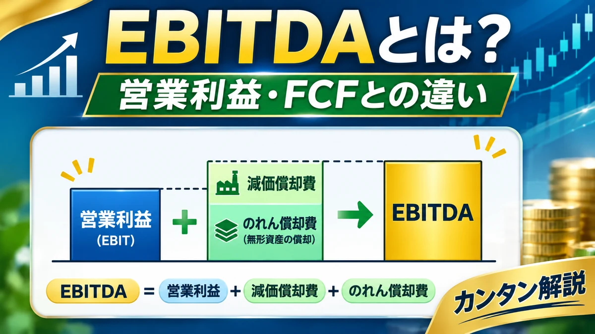

EBITDAとは？営業利益・フリーキャッシュフローとの違いと企業の収益力の見方を初心者向けに解説
決算資料で目にする「EBITDA」。営業利益より大きな数字になることもありますが、企業が自由に使える現金を示すわけではありません。利益・現金・設備投資・借入負担の関係を整理します。

目次
EBITDAとは？
EBITDAは Earnings Before Interest, Taxes, Depreciation and Amortization の略で、「利払い前・税引き前・減価償却前利益」などと呼ばれます。利息・税金・有形固定資産の減価償却費・無形資産償却費などの影響を調整した利益水準を捉える指標です。
重要：EBITDAは会計基準上の統一された利益項目ではありません。企業や資料により計算方法・調整対象が異なるため、定義の確認が必要です。
EBITDAの計算方法
EBITDA ＝ 営業利益 ＋ 減価償却費 ＋ 無形資産償却費
これは代表的な簡略式です。営業利益に既に含まれている償却費を加え戻す考え方で、企業独自の調整が入ることもあります。
純利益から求める場合
当期純利益に法人税等、支払利息、減価償却費・無形資産償却費などを調整して算出する方法もあります。ただし営業外損益・特別損益なども関係するため、単に税金・利息・償却費を足した値が営業利益起点のEBITDAと必ず一致するわけではありません。
EBITDA・営業利益・純利益・FCFの違い
| 指標 | 主に何を見るか | 注意点 |
|---|---|---|
| 営業利益 | 本業の会計上の収益性 | 現金の出入りとは一致しない |
| EBITDA | 減価償却費等の影響を調整した利益水準 | 設備投資や運転資金を直接反映しない |
| 当期純利益 | 税金などを反映した最終的な利益 | 営業外・特別損益の影響も受ける |
| フリーキャッシュフロー（FCF） | 事業活動や設備投資などを踏まえた現金の流れ | 算出定義が複数ある |
EBITDAは利益ベースの指標、FCFは現金の流れを考える指標です。営業利益・経常利益・純利益の違いも参考にしてください。
EBITDAの計算例
以下は架空企業の単純化した例です。
| 売上高 | 1,000億円 |
|---|---|
| 営業利益 | 100億円 |
| 減価償却費 | 30億円 |
| 無形資産償却費 | 10億円 |
100億円 ＋ 30億円 ＋ 10億円 ＝ EBITDA 140億円
EBITDAマージンは140億円 ÷ 1,000億円 × 100 ＝ 14％です。
減価償却費とは？
企業が購入した機械・建物などの取得費用を、使用期間などに応じて複数の会計期間に配分する処理を減価償却といいます。たとえば設備を購入した年に現金を支払っても、費用は数年にわたり計上されることがあります。
減価償却費を計上した時点で必ずしも同額の現金が出ていくわけではありません。しかし、設備購入時などの支出がなくなるわけではないため、EBITDAだけでは設備維持・更新の負担を測れません。
EBITDAが高ければ現金も豊富？
いいえ。EBITDAは現金残高でも営業キャッシュフローでもありません。売掛金の増加による入金待ち、棚卸資産の増加による仕入支出、設備投資、利息・税金の支払い、借入金の返済などで手元資金は変化します。
売掛金や在庫の増加は営業キャッシュフローを圧迫し、設備投資は投資キャッシュフローを減らします。借入金の元本返済は通常、財務キャッシュフローに計上されます。EBITDAがプラスでも営業CFやFCFがマイナスになる場合があります。
EBITDAとフリーキャッシュフローの違い
別の架空企業の数値を仮定します。EBITDAが140億円、営業キャッシュフローが90億円、設備投資による現金支出が120億円だったとします。
簡略的なFCF ＝ 90億円 − 120億円 ＝ −30億円
EBITDAが140億円でもFCFはマイナスです。この3つの数値はそれぞれ仮定したものであり、EBITDAから営業キャッシュフローが機械的に求まるわけではありません。FCFにも「営業CF−設備投資」や「営業CF＋投資CF」など複数の定義があります。
詳しくはフリーキャッシュフローとは？黒字でも現金が足りなくなる理由をご覧ください。
EBITDAマージンとは？
EBITDAマージン ＝ EBITDA ÷ 売上高 × 100
売上高に対するEBITDAの割合で、収益性を比較する参考になります。ただし設備集約度、償却方針、業界の収益構造、EBITDAの定義が異なるため、異業種間の単純比較や一律の優良基準は避けましょう。
EV/EBITDA倍率とは？
EV（Enterprise Value）は、株主だけでなく債権者などの資金提供者も考慮する企業価値の概念です。
EV ＝ 株式時価総額 ＋ 有利子負債 − 現金及び現金同等物
EV/EBITDA倍率 ＝ EV ÷ EBITDA
上のEVは簡略式です。実務では非支配株主持分、優先株式、リース負債、その他の調整が必要になる場合があります。倍率が低ければ必ず割安、高ければ必ず割高というわけではなく、成長性、事業リスク、設備投資負担、同業比較などが重要です。
ネット有利子負債／EBITDA倍率とは？
借入負担を利益水準との関係で見る参考指標です。ネット有利子負債は通常、有利子負債から現金等を差し引いて考えますが、現金等の範囲は定義に注意が必要です。
ネット有利子負債／EBITDA倍率 ＝ ネット有利子負債 ÷ EBITDA
架空例：有利子負債300億円 − 現金等100億円 ＝ ネット有利子負債200億円。EBITDA100億円なら2.0倍です。
この倍率は実際の返済年数を直接表しません。利息・税金・設備投資・運転資金などの支出があるためです。EBITDAがゼロやマイナスの場合は倍率が算出不能または解釈困難になります。
EBITDAのメリットと限界
メリット
- 減価償却費等の違いを調整して収益性を考えられる
- 設備投資型企業の比較で参考になる
- 企業価値評価や借入負担の分析に利用できる
限界
- 設備投資の現金支出を直接反映しない
- 運転資金の増減を直接反映しない
- 利息や税金の支払いを直接反映しない
- 算出方法が企業によって異なる
- EBITDAが高くても財務健全性が高いとは限らない
ROIC・自己資本比率との関係
EBITDAは償却費等を調整した利益水準、ROICは投下資本に対する利益の効率、自己資本比率・D/Eレシオは財務構造を見る指標です。異なる角度から組み合わせることが重要です。
決算資料での確認方法
企業の決算短信、有価証券報告書、決算説明資料、統合報告書を確認します。営業利益、減価償却費、キャッシュフロー計算書、有利子負債などを見比べましょう。
企業独自のEBITDAを開示している場合は計算式と調整項目を確認してください。「調整後EBITDA」では一時費用、株式報酬費用、買収関連費用などを別途調整する場合があり、通常のEBITDAと混同しないことが重要です。
開示資料の確認先：金融庁 EDINET、日本取引所グループ（JPX）。会計基準の確認にはASBJやIFRS Foundationも参考になります。
初心者向けチェックリスト
- EBITDAの算出方法は何か
- 調整後EBITDAではないか
- 営業利益とどれくらい差があるか
- 減価償却費が大きい理由は何か
- 営業キャッシュフローはどうか
- FCFはプラスかマイナスか
- 設備投資の負担は大きいか
- 有利子負債は増えていないか
- 同業他社や過去数年間と比較してどうか
よくある質問（FAQ）
EBITDAとは何ですか？
利息・税金・減価償却費などの影響を調整した利益水準を見る指標です。会計基準上の統一された利益項目ではありません。
EBITDAはどう計算しますか？
代表的な簡略式は「営業利益＋減価償却費＋無形資産償却費」です。企業ごとの定義を確認してください。
EBITDAと営業利益は何が違いますか？
EBITDAは営業利益に含まれる償却費等を加え戻すため、償却費の影響を調整して比較できます。
EBITDAと純利益は何が違いますか？
純利益は税金などを反映した最終利益です。EBITDAは利息・税金・償却費などを調整した指標です。
EBITDAとFCFは同じですか？
違います。EBITDAは利益指標、FCFは事業活動と設備投資などを踏まえた現金の流れを見る指標です。
EBITDAが高ければ現金も多いですか？
いいえ。売掛金、在庫、設備投資、税金や利息の支払いなどにより現金は少ない場合があります。
EBITDAマージンとは何ですか？
EBITDAを売上高で割った割合です。業種や算出方法が異なる企業の単純比較には注意が必要です。
EV/EBITDA倍率とは何ですか？
企業価値EVをEBITDAで割る評価指標です。倍率だけで割安・割高は判断できません。
調整後EBITDAとは何ですか？
企業が特定の費用・損益などを独自に調整したEBITDAです。調整項目や定義を必ず確認してください。
EBITDAがマイナスの場合はどう考えますか？
償却費等を調整しても利益水準がマイナスである可能性があります。継続性や事業の状況を確認し、EV/EBITDA倍率などの解釈には注意してください。
まとめ
EBITDAは償却費等の影響を調整して企業の収益性を見る参考指標ですが、現金創出力や財務健全性を直接示すものではありません。営業利益・FCF・ROIC・自己資本比率などと組み合わせ、設備投資や借入負担も確認しましょう。
関連記事
ご利用にあたっての注意事項
本記事は金融教育を目的とする一般的な情報提供であり、特定銘柄の売買を推奨するものではありません。実際の投資判断では企業の最新開示資料等を確認し、ご自身の判断と責任で行ってください。